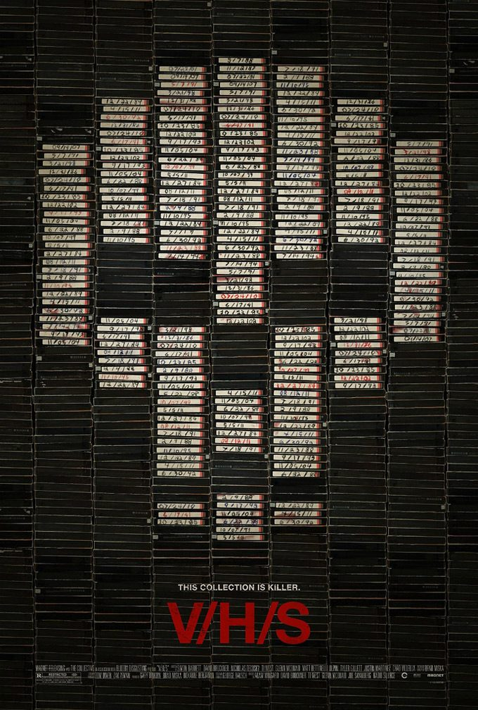

2012
TAPE 56
V/H/S
SEGMENTOS
ARCHIVO RECUPERADO · 9 CINTAS · 2012 — 2026
Grabaciones presentadas como reales y descubiertas tras los hechos: a través de cámaras en mano, estática analógica y grabaciones malditas. Explora la saga antológica donde múltiples directores de culto entrelazan cortometrajes bajo la maldición de las cintas.
ARCHIVO · SELECCIONA UNA CINTA

Inserta aquí la portada
V/H/S (2012)
SEGMENTOS
EXPEDIENTE · FOUND FOOTAGE
La saga V/H/S es producida y distribuida principalmente por Bloody Disgusting y Shudder (junto a socios como Magnet Releasing y Studio71). Estas compañías de nicho especializadas en terror han convertido la franquicia en una plataforma colectiva donde cineastas independientes exploran el género sin las restricciones del cine comercial.
El found footage (metraje encontrado) es un subgénero del terror donde la película se presenta como una grabación real descubierta tras los hechos. Utiliza cámaras de mano, perspectivas en primera persona, interferencias visuales y estética analógica para sumergir al espectador en una experiencia hiperrealista e inquietante.
A diferencia de las secuelas tradicionales con una sola historia continua, V/H/S destaca por su formato antológico. Cada entrega reúne a múltiples directores de culto para ofrecer cortometrajes independientes, entrelazados por una enigmática trama envolvente que sirve de marco para la maldición de las cintas.